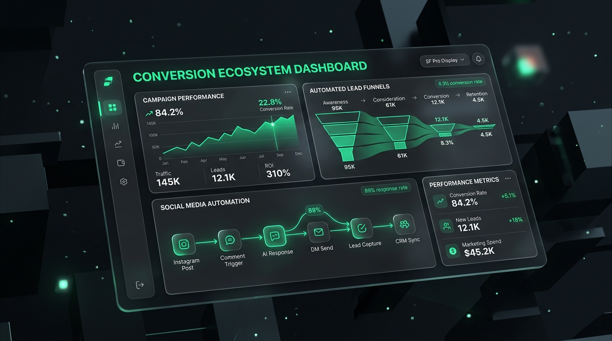

Hacemos que dejes de
depender de los algoritmos.
Transformamos audiencias pasivas en clientes leales y facturación predecible. Diseñamos embudos de alta conversión, automatización de respuestas en redes, creación de contenido persuasivo, analítica de métricas y sistemas de email marketing.

El fin de la incertidumbre algorítmica
Mientras la mayoría de las agencias persiguen "likes" y tendencias efímeras, nosotros construimos infraestructura comercial que convierte cada punto de contacto en ingresos recurrentes.
Vivir bajo el capricho del algoritmo
El modelo obsoleto que desgasta a tu equipo y no genera certezas.
- Alcance orgánico inestable que se desploma con cada actualización de plataforma.
- Respuestas lentas o manuales en DMs donde más del 70% de los clientes potenciales se enfrían.
- Miles de visualizaciones vanidosas que nunca se traducen en facturación real ni ventas.
- No poseer la base de datos de tu audiencia; si te bloquean la cuenta, pierdes tu negocio.
Arquitectura de Conversión Predecible
Infraestructura propia orientada a adquisición, fidelización y números claros.
- Canales propios blindados: Email marketing segmentado y bases de clientes que te pertenecen para siempre.
- Automatización 24/7 en segundos: Flujos inteligentes en comentarios y mensajes directos que capturan y cualifican leads al instante.
- Embudos de venta calibrados: Cada pieza de contenido tiene un propósito comercial definido y un camino claro hacia la compra.
- Métricas de negocio reales: Control absoluto de Costo de Adquisición (CAC), Retorno de Inversión (ROI) y Valor del Cliente (LTV).
Propiedad de Activos
Dejas de alquilar tu audiencia a Meta o TikTok. Construimos tu lista de suscriptores y base de datos privada con tasas de apertura del +40%.
Velocidad Insuperable
El cliente compra en el momento de mayor interés. Nuestras automatizaciones responden comentarios y entregan recursos en menos de 10 segundos.
Contenido Psicológico
No creamos contenido por crear. Diseñamos disparadores de atención, desarticulación de objeciones y llamadas a la acción con rigor neurocomercial.
Ciencia de Métricas
Dashboards transparentes en tiempo real. Sabemos con exactitud cuántos dólares genera cada video, cada email y cada interacción automatizada.
El Ecosistema Completo de Crecimiento
Cada componente está meticulosamente ensamblado para alimentar a los demás y generar un ciclo continuo de atracción, captura y fidelización.
Embudos de Venta de Alta Conversión
Diseñamos e implementamos arquitecturas de embudo a medida: landing pages de alta conversión, ofertas irresistibles, micro-vsls, páginas de pago optimizadas y secuencias post-venta.
- Páginas de captura y ventas ultra-rápidas
- Order bumps, upsells y downsells estratégicos
- Tracking server-side (CAPI, GA4, pixel sin pérdidas)
Automatización de Redes & DMs Inteligentes
Transforma comentarios en clientes. Si un usuario comenta una palabra clave en Instagram o TikTok, recibe al instante un mensaje directo interactivo que lo cualifica y entrega tu propuesta.
- Disparadores automáticos por comentarios en posts & reels
- Chatbots con IA para cualificación y agendamiento
- Sincronización instantánea con tu CRM y WhatsApp
Creación de Contenido Estratégico
Producción de contenido de alta retención diseñado para atraer al cliente ideal y no a meros curiosos. Guiones con ganchos psicológicos, edición dinámica y llamadas a la acción con conversión directa.
- Guiones basados en los dolores y deseos del avatar
- Edición de alta retención para Reels, TikTok y YouTube
- Estrategia Inbound conectada con las automatizaciones
Email Marketing & Retención de Clientes (LTV)
El canal con mayor retorno de inversión digital. Construimos secuencias automatizadas de bienvenida, recuperación de carritos, nutrición de prospectos y campañas de reactivación periódica.
- Automatizaciones por comportamiento del suscriptor
- Copywriting persuasivo y newsletters que venden
- Segmentación avanzada para multiplicar el valor de vida (LTV)
Analítica Avanzada & Optimización CRO
Lo que no se mide no se puede escalar. Analizamos cada punto de fricción en tu proceso de compra, implementamos mapas de calor, tests A/B continuos y modelos de atribución multicanal.
- Auditorías CRO completas y detección de fugas de dinero
- Dashboards centralizados en Looker Studio / Notion
- Optimización matemática del Costo por Adquisición (CPA)
Lead Nurturing & Sincronización CRM
Conectamos tus canales de captación directamente con tu CRM (HubSpot, ActiveCampaign, Notion, Airtable) y herramientas de ventas para que tu equipo comercial cierre leads calientes sin perder tiempo.
- Puntuación automática de prospectos (Lead Scoring)
- Alertas inmediatas en WhatsApp y Slack para cierres rápidos
- Pipelines automatizados de seguimiento continuo
Cómo construimos tu máquina de conversión
Un proceso estructurado de 4 fases para eliminar la improvisación y garantizar predictibilidad.
Auditoría & Detección de Fugas
Analizamos a fondo tu audiencia actual, canales de adquisición, puntos ciegos y por qué los usuarios no están convirtiendo en clientes de pago.
Arquitectura del Embudo
Estructuramos la oferta irresistible, diseñamos páginas de alta velocidad y configuramos los sistemas de captura y seguimiento de datos limpios.
Automatización & Contenido
Desplegamos los flujos de respuesta en tiempo real en redes sociales, integramos secuencias de email y publicamos piezas con gatillos de conversión.
Analítica & Escalamiento
Medimos cada interacción, realizamos pruebas continuas de optimización CRO y escalamos el volumen para multiplicar el retorno de manera sostenida.
Especialistas en Sistemas & Rentabilidad
Detrás de Markefer hay un equipo multidisciplinario enfocado en ingeniería de conversión, tecnología de automatización y narrativa persuasiva.
Fernando Martinez
Arquitectura de Embudos & CROEspecialista en conversión y diseño de modelos de adquisición predecible. Tras liderar estrategias que rentabilizaron aun mas los proyectos , fundó Markefer con una obsesión: erradicar la incertidumbre de los algoritmos y dar a los negocios control total de sus números.
Matias Riscossa
Ingeniería de Flujos & Conectividad CRMApasionado por la automatización de procesos y la inteligencia conversacional. Diseña los ecosistemas donde cada mensaje y comentario se convierte en una oportunidad de negocio, integrando ManyChat, APIs de Meta, Make y CRMs avanzados para lograr tiempos de respuesta inferiores a 8 segundos.
Luciano Flotta
Storytelling Persuasivo & RetenciónEspecialista en narrativa visual estratégica y retención de audiencia. Transforma conceptos técnicos y marcas complejas en piezas de video y secuencias de email que enganchan en los primeros 3 segundos y guían sutil pero contundentemente al usuario hacia la acción de compra sin parecer publicidad invasiva.
De la incertidumbre a la facturación estable
Marcas y creadores que recuperaron el control de su negocio gracias a nuestros sistemas.
"Pasamos de vivir estresados por si un reel tenía o no reproducciones, a tener un flujo automático donde cada comentario genera una conversación en DM y captura el email. Generamos una base de datos entera para ofrecer nuestros cursos en 60 días."
"El sistema de email marketing y automatizaciones que configuró Markefer nos permite figurar en los dispositivos de nuestros clientes más allá de si publicamos un reel o no"
"El tiempo de respuesta de nuestro equipo de ventas era de 6 a 12 horas. Markefer lo bajó a 8 segundos. Los prospectos agendan directamente en el calendario cualificados y listos para cerrar."
Todo lo que necesitas saber antes de empezar
Respuestas directas sin tecnicismos innecesarios.
Significa que tu facturación deja de estar a merced de si Instagram o TikTok deciden mostrar o esconder tu contenido hoy. Al capturar la atención y transformarla en listas de email privadas, automatizaciones de mensajería directa y embudos propios, puedes enviar un mensaje a miles de prospectos en cualquier momento y generar ventas de forma predecible sin pagar publicidad adicional ni rezarle al alcance orgánico.
Trabajamos con las herramientas líderes de la industria bajo estándares oficiales y aprobados por Meta: ManyChat para Instagram y TikTok DMs, Klaviyo o ActiveCampaign para Email Marketing y retención, Make/Zapier para conexiones complejas, y CRMs como HubSpot, Notion o Airtable para la gestión de prospectos comerciales.
La implementación de las primeras automatizaciones de respuesta y embudos de captura toma entre 7 y 14 días. La mayoría de nuestros clientes comienzan a experimentar un aumento drástico en la captura de leads calificados y conversaciones en DMs desde la primera semana de activación.
Ofrecemos un modelo híbrido flexible: podemos guionizar, estructurar los ganchos y editar tu material para que tú solo tengas que grabarte unos minutos a la semana, o podemos diseñar piezas y secuencias completas desde cero adaptadas a la identidad de tu marca.
Antes de iniciar cualquier proyecto realizamos un diagnóstico minucioso. Si detectamos que tu negocio aún no cuenta con la validación mínima para rentabilizar nuestros sistemas, te lo diremos con total transparencia. Además, configuramos paneles de métricas donde podrás seguir en tiempo real el valor económico generado por cada componente de tu nuevo ecosistema.
Deja de rezarle al algoritmo.
Construye un sistema predecible hoy.
Inicia una conversación directa con nuestro equipo. Analizaremos tus números actuales, detectaremos tus fugas de conversión y trazaremos tu hoja de ruta personalizada.